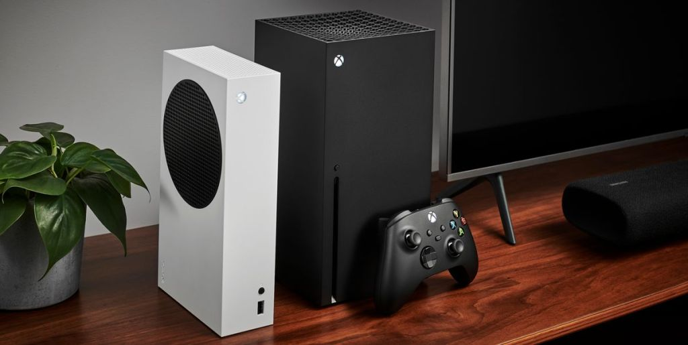

New Xbox Console Expected in 2026
Aiming to Avoid Console Wars
Microsoft seems to be positioning the next Xbox to avoid direct competition with Sony’s next PlayStation. By launching in 2026, they hope to sidestep the intense console wars that marked previous generations. The latest PlayStation at that time is expected to be the PlayStation 5 Pro, which would not pose an immediate threat to the new Xbox.
The current Xbox Series X|S consoles have struggled to showcase their full potential. Despite their superior hardware capabilities, they lack a robust lineup of exclusive games. Notable titles include Starfield, Hellblade 2, Avowed, Gears 6, and an upcoming Indiana Jones game. Microsoft hopes that the next-gen console will leverage these titles and new ones to succeed where the Series X|S fell short.
This report aligns with previous rumors hinting at a 2026 release for the next-gen Xbox. Although these reports remain unconfirmed, they suggest a strategic move by Microsoft to regain its footing in the console market. As the gaming community speculates about the future of Xbox, only time will tell how this new strategy will unfold.